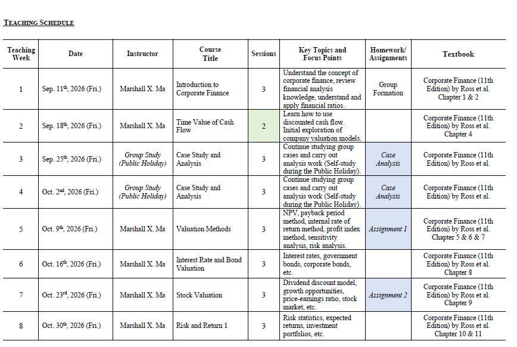
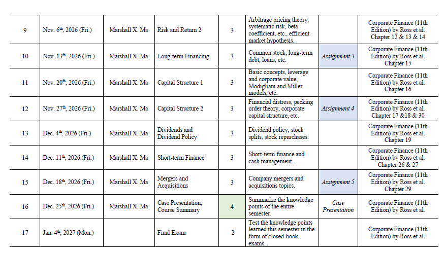

2026秋 · MF20001.01 · 马晓崟
来源：复旦教务系统教学大纲，本轮使用已授权账号下载。原始正文与考核信息；去除联系方式和网页脚本，内嵌图片按原字节去重保存。
本课程旨在涵盖公司金融的基本原理，运用分析框架审视财务管理者面临的重要财务决策，并分析如何通过精心设计的决策产生持久的价值影响。本课程既强调公司金融的理论层面，也注重其应用层面，课程围绕企业做出的最重要财务决策展开。我们将涵盖的主题包括：货币时间价值、估值方法、债券与股票估值、风险与收益分析、长期融资、资本结构、股利分配政策、短期融资以及兼并与收购。
This course aims to cover the basic corporate finance principles, apply the analytical frameworks to examine important financial decisions faced by financial managers, and analyze how well-crafted decisions can generate lasting value impact. This course emphasizes the both the theoretical and applied side of corporate finance, and is structured around the most important financial decisions made by a firm. The topics we will cover include time value of money, valuation methods, bond and equity valuations, risk and return analysis, long-term financing, capital structure, payout policies, short-term finance, and M&As.
This course introduces students to the foundation knowledge and techniques in corporate finance, as well as covering more specialized aspects of corporate finance on which other subjects can be built. This course will help students to identify real life corporate finance issues and explain the related observations or phenomena in terms of sound financial theories concepts. Students are also able to apply the up-to-date corporate finance principles and see their impact on corporate policies and strategies. The course also requires the students to communicate in English effectively.
All lectures will be conducted face-to-face. The lecturer will present a summary of the main concepts and applications from assigned chapters in class. Subject to time availability, the lecturer may also cover several end-of chapter problems in class. To derive maximum benefit, students are strongly recommended to study the assigned chapter(s) and look at the assigned end-of-chapter problems before each class. There will be five homework and one group assignment involving analysis, presentation, and report during the whole semester. Upon availability and school permissions, there may be a session of company visit(s) and the corresponding session will be given by both the instructor and a guest lecturer onsite.
Students are recommended to spend at least 3 hours of self-study per week on the subject, in addition to attending lectures and case analysis. However, the actual amount of time spent by each student will depend on many factors - previous background, ability to deal with numbers, comfort level with somewhat abstract (at times challenging) concepts in finance.
Upon successful completion of this course, students should be able to:
•Understand the major tasks of corporate finance;
•Understand the role of financial markets and interest rate in corporate financing and how they should be incorporated in corporate financing decisions;
•Understand the importance of time value of money and its relevance to corporate financial decisions, and be able to apply the up-to-date knowledge acquired in the course to solve similar capital budgeting problems in other real case situations;
•Understand the return-risk relation and the CAPM, issues of cost of capital, capital structure, and different methods of equity and debt financing.
In-person Teaching
Following:


Brealey, R.A., S.C. Myers, and F. Allen, 《公司金融原理》, McGraw-Hill/Irwin出版社，最新版本
Ross, Westerfield, Jaffe, and Jordan, 《公司理财》, 第11版, McGraw-Hill出版社。
| 项目 | 比例 | 评定说明 |
|---|---|---|
| 出勤Attendance | 10.0% | Attendance and Participation.Students are expected to attend all lectures (and activities if any) onsite. Students are highly encouraged to actively participate in various classroom activities arranged by the lecturer. Performance on problem solving will be evaluated on the effort rather than accuracy. Different instructor may have his/her own ways to assess the student’s participation during class. |
| 作业/实验/实践Assignment | 20.0% | There will five homework in total, each reflecting the teaching materials taught in previous lectures. Each student should finish the assignment on her/his own and hand it the TA on time. |
| 课题论文Research Paper | 20.0% | Students can form a group of about 8 students by themselves and will be assigned a case. There will be 6 groups in total. The formation of group shall be reported to the Teaching Assistant before the end of the first class. Each group is required to work on a group project and make a 20-minute presentation and submit a final report. – |
| 期末考试Final Examination：闭卷 | 50.0% | A mixture of computational and written questions similar to the homework and textbook problem set. It is a closed book exam. |